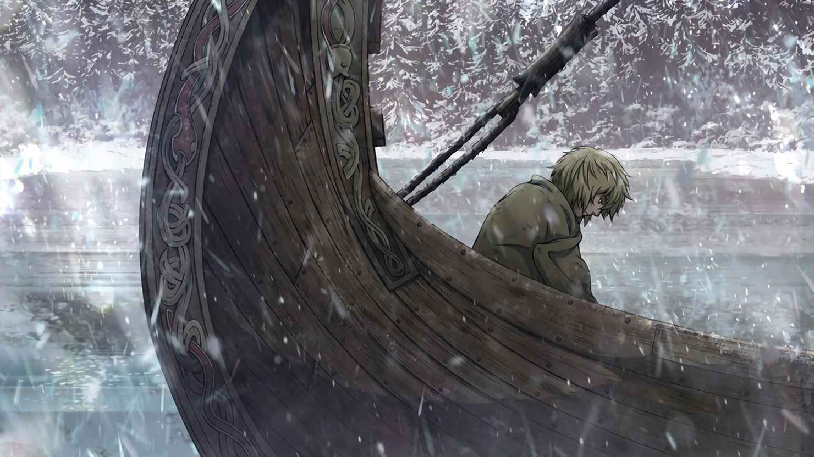
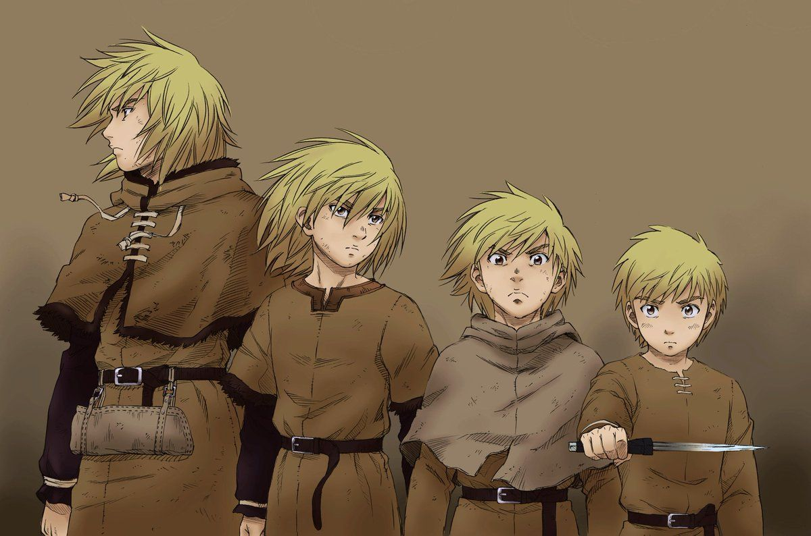
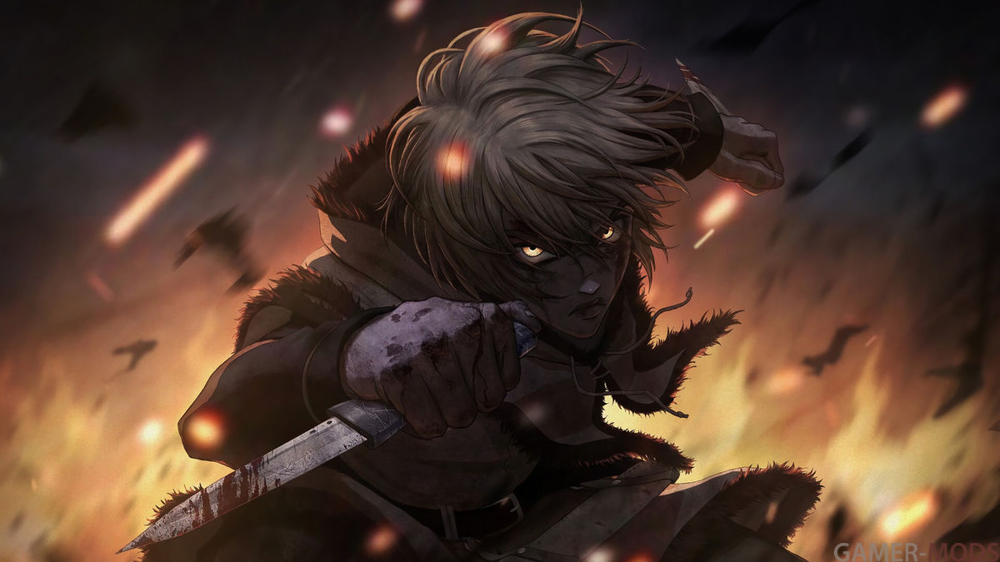

Торффин в начале истории показывается как добрый и общительный ребенок. После смерти своего отца помешался на мести Аскеладду, замыкаясь в себе, совершенно не думая о других. После смерти Торса, Торффин остался на его драккаре спрятавшись в трюме (который Аскеладд забрал себе) и поклялся отомстить за смерть своего отца, убив Аскеладда в честном поединке. Он рассуждал о происшествии и не мог понять слов отца, почему настоящему воину ненужен меч, он не в силах принять смерть отца и в нём пробуждается ненависть. Вечером того же дня, он подавленно смотрит за командой Аскеладда с борта драккара своего отца и удивляет их своими полными ненависти глазами, а затем, яростно кричит о том, что однажды убьет Аскеладда и отомстит.


